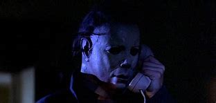
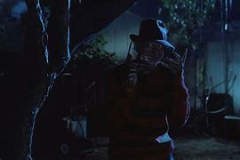
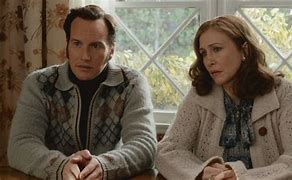
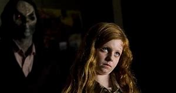

Halloween"Halloween" começa em 1963, quando o jovem Michael Myers, de apenas seis anos, assassina brutalmente sua irmã mais velha na cidade fictícia de Haddonfield. Após o crime, Michael é internado em uma instituição psiquiátrica, onde permanece em silêncio por 15 anos. Quinze anos depois, em 1978, na noite de Halloween, Michael escapa do hospital psiquiátrico e retorna a Haddonfield. Sem motivos aparentes, ele começa a perseguir um grupo de adolescentes, focando especialmente em Laurie Strode (Jamie Lee Curtis), uma jovem estudante. Michael é implacável e silencioso, usando uma máscara branca assustadora e armado com uma faca de cozinha. Enquanto a tensão aumenta e os ataques se tornam mais brutais, o Dr. Sam Loomis (Donald Pleasence), o psiquiatra de Michael, tenta desesperadamente encontrá-lo e evitar mais mortes, acreditando que ele é o próprio mal encarnado. Halloween é conhecido por sua trilha sonora icônica e seu uso da câmera em primeira pessoa para intensificar a sensação de perseguição e perigo. O filme se tornou um clássico do terror, ajudando a definir os padrões do subgênero "slasher" e inspirando várias sequências e remakes ao longo das décadas. A máscara icônica de Michael Myers, por exemplo, foi uma máscara do Capitão Kirk (de Star Trek) pintada de branco. Esse visual simples, porém assustador, tornou-se um dos elementos mais memoráveis do filme. |
Hora do PesadeloCidade fictícia de Springwood, onde um grupo de adolescentes começa a ter pesadelos perturbadores com um homem desfigurado, de pele queimada, usando um suéter listrado, chapéu fedora e uma luva com lâminas nos dedos: Freddy Krueger (interpretado por Robert Englund). Nancy Thompson (Heather Langenkamp) é uma das adolescentes atormentadas por Freddy nos sonhos. Ela descobre que o vilão tem a capacidade de ferir e até matar suas vítimas enquanto elas dormem, e qualquer ferimento no sonho reflete no corpo da pessoa na vida real. Conforme os ataques de Freddy se tornam mais violentos, Nancy e seus amigos começam a lutar para se manterem acordados, tentando sobreviver e entender o que está acontecendo. Nancy eventualmente descobre que Freddy foi um assassino de crianças, morto por vingança pelos pais da cidade anos antes. Agora, ele retornou do além para se vingar, atacando os filhos de seus algozes nos sonhos. Com Freddy cada vez mais poderoso, Nancy precisa encontrar uma maneira de enfrentá-lo e sobreviver ao pesadelo. A Hora do Pesadelo é um filme inovador no gênero de terror, combinando horror sobrenatural com o conceito de sonhos mortais. Ele popularizou Freddy Krueger como uma figura aterrorizante e ajudou a estabelecer o subgênero "slasher", tornando-se um dos filmes de terror mais influentes da década de 1980 e gerando uma franquia duradoura. |
Invocação do MalInvocação do Mal (2013) é um filme de terror dirigido por James Wan, inspirado em eventos reais investigados pelos famosos demonologistas e investigadores paranormais Ed e Lorraine Warren (interpretados por Patrick Wilson e Vera Farmiga). A história se passa em 1971 e acompanha a família Perron, que se muda para uma fazenda antiga em Rhode Island. Logo após a mudança, eventos estranhos e assustadores começam a acontecer na casa: barulhos inexplicáveis, objetos que se movem sozinhos e aparições que aterrorizam as filhas do casal Roger e Carolyn Perron (interpretados por Ron Livingston e Lili Taylor). Desesperados, os Perron procuram a ajuda de Ed e Lorraine Warren, que, ao investigarem a casa, descobrem que o local possui um histórico sombrio e que uma entidade maligna está assombrando a família. Conforme o terror se intensifica e a vida dos Perron é posta em risco, os Warren realizam uma série de sessões na tentativa de compreender e confrontar a força sobrenatural que reside na casa. Invocação do Mal é reconhecido por sua atmosfera tensa e uso de técnicas de suspense clássico, evitando sustos gratuitos e focando em uma construção gradual de medo. O filme foi amplamente elogiado e deu origem a uma franquia de sucesso, que explora outros casos dos Warren e histórias de objetos amaldiçoados, como a boneca Annabelle. |
EntidadeDirigido por Scott Derrickson, é um filme de terror psicológico que segue o jornalista true crime Ellison Oswalt, que se muda com sua família para uma casa nova, com o objetivo de investigar e escrever um livro sobre um assassinato não resolvido. Ellison encontra filmes caseiros antigos no sótão da casa, que mostram o assassinato de uma família aparentemente sem motivo, e logo descobre que as vítimas foram mortas por um serial killer desconhecido. Conforme Ellison investiga mais a fundo, ele percebe que os vídeos mostram outras mortes de famílias anteriores, todas aparentemente ligadas a um culto demoníaco, e começa a perceber uma presença sobrenatural e sinistra na casa. Ele é assombrado por visões cada vez mais perturbadoras e por uma série de acontecimentos inexplicáveis envolvendo sua família. À medida que Ellison mergulha mais fundo na investigação, ele descobre uma ligação entre os assassinatos e uma entidade demoníaca chamada Bughuul, que é responsável por consumir as almas das crianças nas famílias que ele ataca. Tentando salvar sua própria família e resolver o mistério, Ellison enfrenta um crescente perigo enquanto se vê cada vez mais envolvido com forças além de sua compreensão. É conhecido por sua atmosfera sombria e crescente tensão psicológica, com uma narrativa que mistura terror sobrenatural com o medo de descobrir o desconhecido. |
|---|